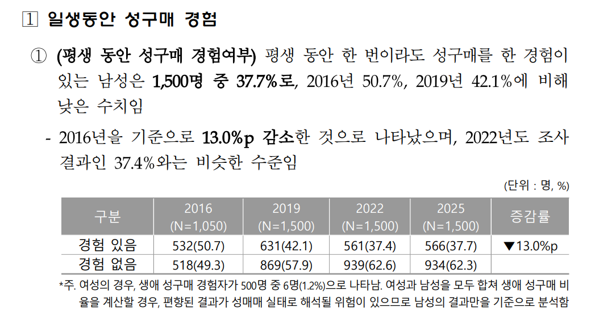
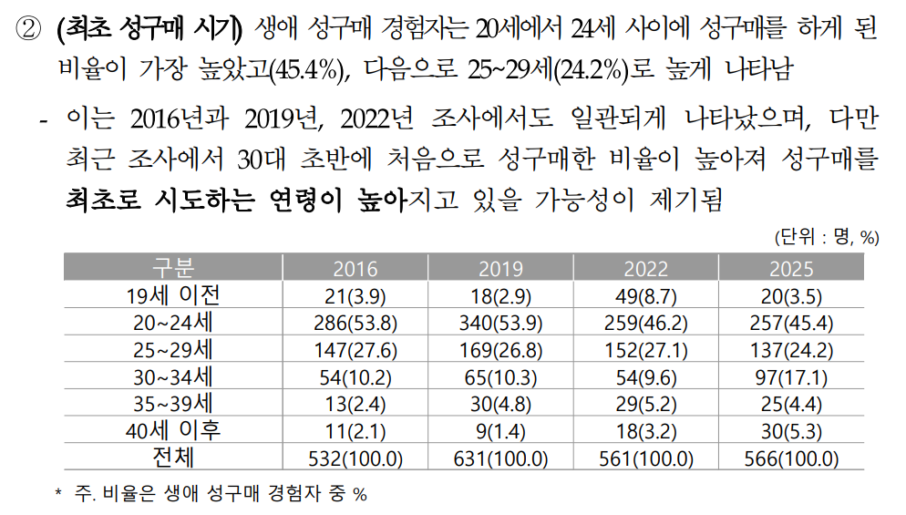
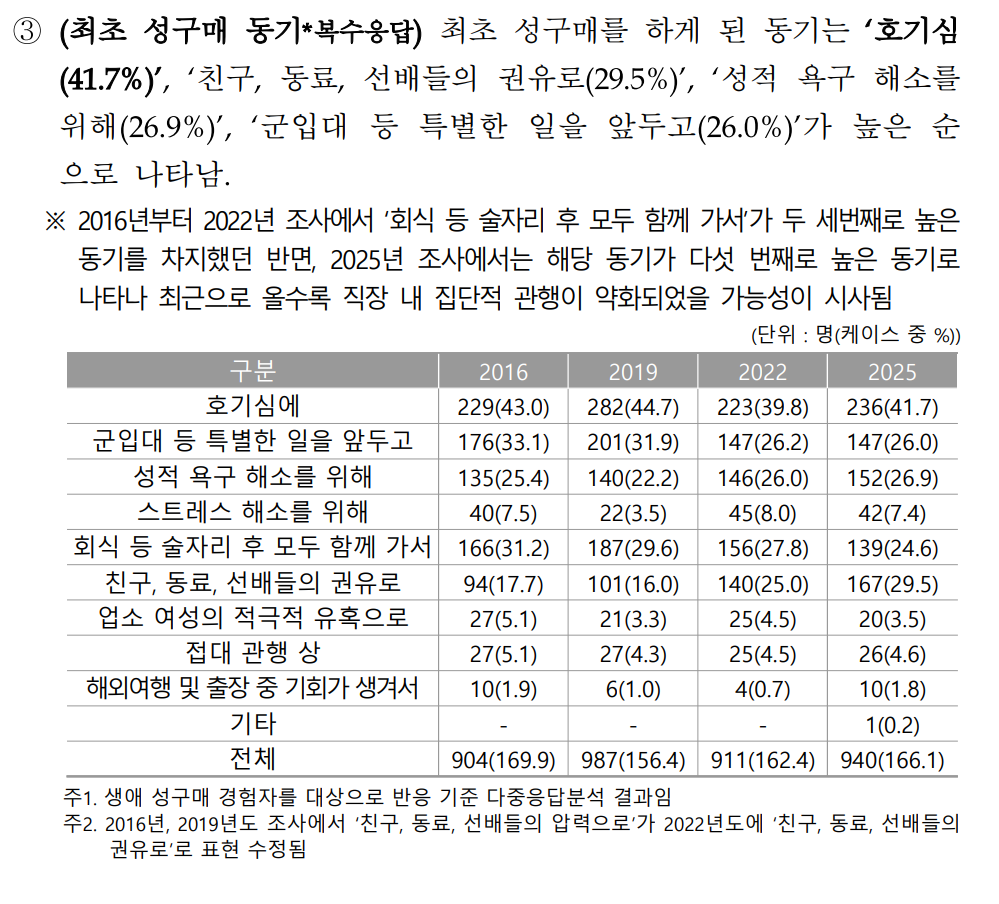
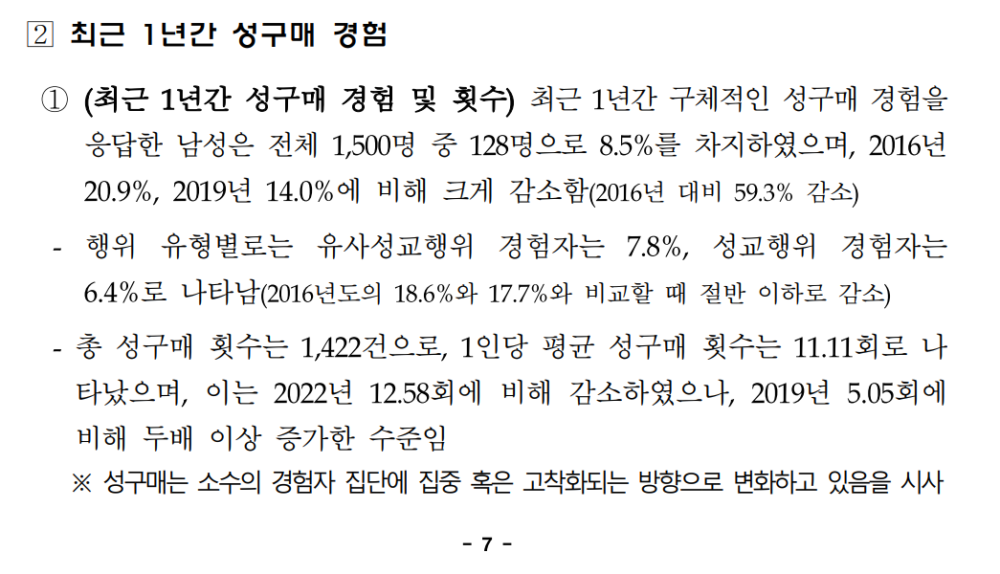
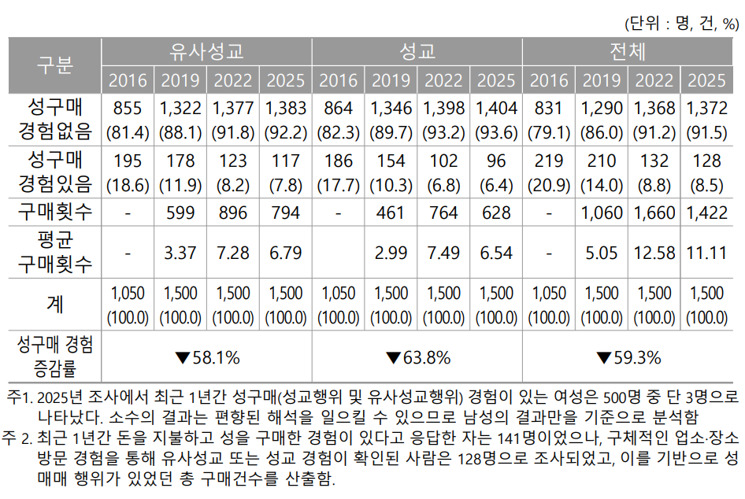
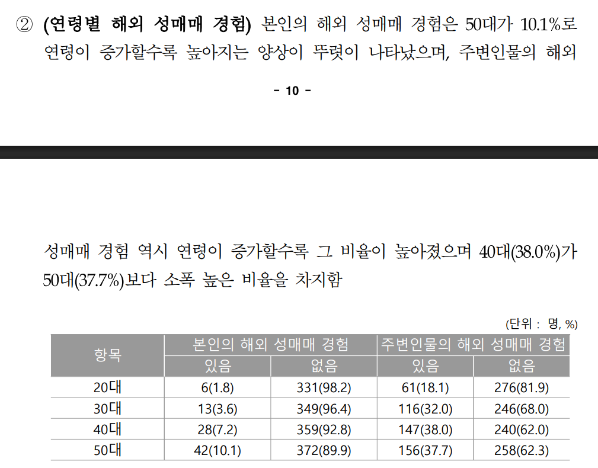

왜 커뮤니티에는 자기 근처에는 성매매 한 사람이 없다고 할까.
아까 좀 이상한 글이 올라왔는데, 정부 보고서를 확인해서 가지고 왔음.
===================================
위에 붙이는 3줄 결론
커뮤니티에서
[나랑 내 주변에서는 하는 사람 없는데, 하는 놈들이 끼리끼리 노는거 아니냐? 늙은 사람들만 하는거 아니냐? ]
라고 하는게 정부 보고서에 통계로 확인 되어있음.
===================================
https://www.mogef.go.kr/nw/rpd/nw_rpd_s001d.do?mid=news405&bbtSn=711223
그냥 해당 보고서를 보면 바로 나옴.

1. 평생 성구매율이 50.7%에서 37.7%로 13% 격감
성구매를 이미 했던 상위 연령대 그대로 있는 상황에서 성 구매를 안하는 하위 연령대가 공급되서 나온 결론이니
하위 연령대에서의 성구매율은 굉장히 낮은 걸 알 수 있음.

2. 20대의 성구매 시도 자체가 줄어듬.
매 조사마다 지속 감소가 확인됨.
저건 전체 대상자의 최초 시도 연령이니
10년간 20대로 추가 유입된 인구 분포 를 고려하면 추가 유입된 20대에서는 성매매 시도 자체가 굉장히 적어진 것을 알 수 있음.
이건 다음 자료와 연동해서 알 수 있음.

3. 성매매 최초 이유
군입대, 직장 회식 등이 지속 감소하고 있음.
성매매 유입의 최초 허들을 낮춰주던 사회적 관행들이 약해지고 있음을 의미함.
공적 허들이 낮아진 자리는 친구, 동료, 선배의 권유로 라는 사적 영역이 들어가고 있음.
나이들면 당연히 하는 성매매에서 하는 사람들만 끼리끼리 하는 성매매로 이동하고 있는 것임.


4. 최근 1년간 성매매 경험
20.9%에서 8.5%로 격감중.
성매매를 하는 사람의 연간 성매매 횟수는 5회에서 11회로 급증.
보고서에서도 대놓고 성매매는 하는 사람만 하는 소수 경험자 집단이 반복적으로 하는 문화로 변해가는 중 이라고 적어놓음.

5. 국내 성매매의 연령별 비율은 공개되어 있지 않지만 해외 성매매의 연령별 비율은 공개되어 있음.
연령이 낮아질 수록 격감하는 추세가 확실함.
===================================
아래에 붙이는 3줄 결론
커뮤니티에서
[나랑 내 주변에서는 하는 사람 없는데, 하는 놈들이 끼리끼리 노는거 아니냐? 늙은 사람들만 하는거 아니냐? ]
라고 하는게 정부 보고서에 통계로 확인 되어있음.
===================================
내 주변에 다 성매매한다고 주장하는 애들은 딱 두부류임.
늙크크 영포티, 그리고 무조건 남자는 성매매한다는 프레임 씌우려고 밭갈이하는 여시폐계련들